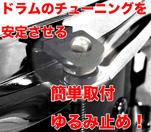
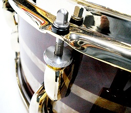
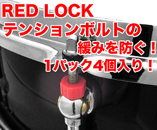

2012 年
04 月 19 日 ( 木 )
テンション・キーパーのメモ。
楽天の写真を引用するのもアレだけど、他にわかりやすい画像がないので。
それとネットでいろいろ検索すると、多くのドラムテックさんが、もし取り付け可能なら Pearl の TNK-10N/10 が確実で良いと書かれている。
- Pearl テンションキーパー TNK-10N/10
-

- Pearl テンションキーパー TL-20
-

- カノウプス レッドロック チューニングボルト用樹脂ナット
-

- TAMA ホールドタイトワッシャー SRW620P
-
これはテンション・キーパーじゃなくてチューニング・ボルトをフープにつけるときに合わせてつけるワッシャーだけど。